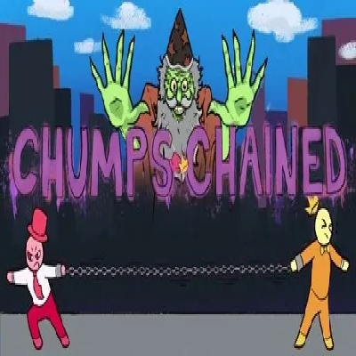
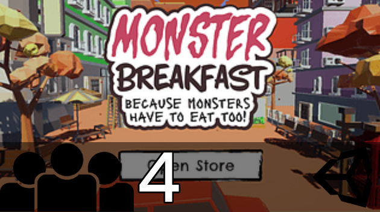
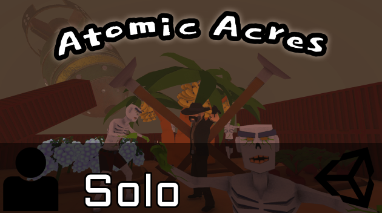
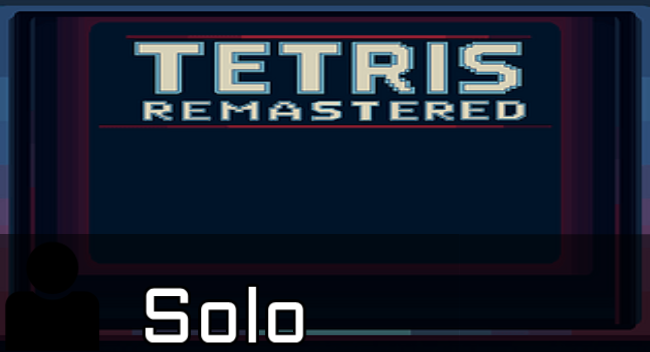

Connor Salyer
Gameplay & Systems Programmer
I build modular, data-driven gameplay systems in Unity and Unreal Engine: AI state machines, event-driven world logic, and the editor tools that make them easy to work with. Currently Lead Programmer on Derby at MonRiverGames.
Featured Work
Studio & flagship projects

Derby
Lead Programmer · MonRiverGames (nonprofit studio)
- Rebuilt the movement controller into vehicle style steering with an independent heading
- Moved rail grind logic out of a single large character Blueprint into a reusable component, reducing merge conflicts
- Built a collision aware chase camera and turned public playtest feedback into a "game-feel" roadmap

Chumps Chained
Assistant Programmer · Skeleton Closet
- Exponential force throwing mechanic and gamefeel
- Main Menu system and implementation
- Code Consultation for Software Archetecture and best practices within Unity Game Engine

SteamSmith
Solo Developer
- Component-based NPC architecture with a NavMesh-driven wander / wait / chase state machine
- Event-driven day/night clock (
OnHourChanged,OnDayEnded) decoupling world systems - Async scene loading with a persistent loading canvas and custom editor tooling
More Projects
Prototypes, jams & team projects

Monster's Breakfast
Created main interaction system and was the main debugger.

Security Defense
A tower defense played entirely through security monitors. Clicks raycast onto a render texture and are re-cast from in-world cameras, and a crash-style betting minigame drives the economy.

Atomic Acres
A small open world first person post apocalyptic farming game featuring pseudo tower defense mechanics at night.

The Patient
A particle-based scanner that traces nearby geometry is the main navigation tool. Color coded ping objects guide the player through a hospital maze.

Tetris (WPF)
Tetris built outside a game engine featuring a grid state, rotation and collision, line clears, and skins!.
Play in your browser
Skills
Technical toolkit
Languages
- C#
- JavaScript
- Python
- HTML / CSS · XAML
Engines & Tools
- Unity (URP, Shader Graph, NavMesh)
- Unreal Engine 5
- Git / GitHub
- Mixamo · Blender pipeline
Systems
- AI state machines & navigation
- Event-driven architecture
- Component-based design
- Scene & lifecycle management
Tech Art & Tooling
- Custom Unity editor scripts
- Triplanar / atlas shaders
- SRP Batcher vs. GPU instancing
- Root motion & animation blending
About
Hi, I'm Connor
I'm a senior in Game Design & Interactive Media at West Virginia University and Lead Programmer on Derby at the nonprofit studio MonRiverGames.
I like systems that are small, decoupled, and composable: an NPC built from stacked components, or a world clock that broadcasts events other systems listen to instead of polling. I prototype fast to find out what's fun, then refactor the prototype into something stable that the rest of the team can build on.
My psychology background shapes how I tune those systems: I care about how they feel to the player, not only whether they work.
- FocusGameplay & systems programming
- Primary stackC# / Unity, Unreal Engine 5
- EducationWVU, B.S. GDIM, May 2027
- Looking forInternships & entry-mid level roles
Contact
Let's talk
I'm looking for gameplay programming, systems design, and technical design roles. The fastest way to reach me is through my phone or email, found on my resume.